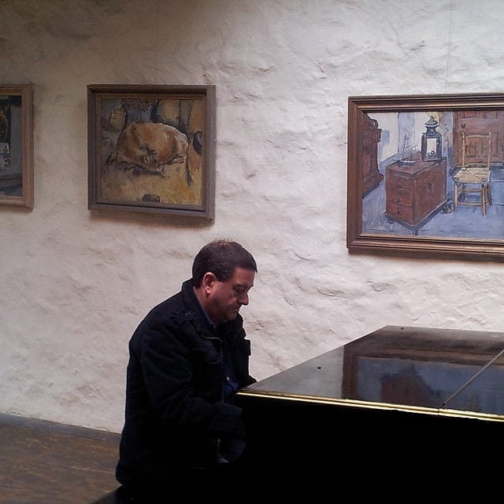
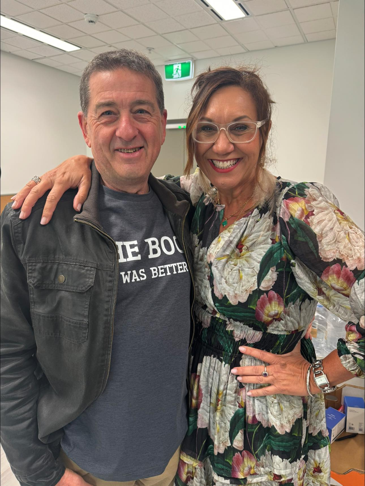

Rob J Kennedy
Rob J Kennedy is a Canberra based writer and composer whose work spans music, philosophy, fiction, poetry, and the arts. He currently writes concert and visual art reviews for Limelight and CityNews. Rob also teaches philosophy at The University of the Third Age.
Music has been part of Rob’s life since childhood, when he first played the flute. He has since played several instruments and is largely self-taught. Progressive rock shaped his early listening and writing, before he discovered classical music and bought his first piano at 18.
Today, his compositions draw on post-classical music, jazz, baroque music, and Russian composers, particularly Sergei Prokofiev. He is especially drawn to the expressive range of the orchestra.
For Rob, music and writing are a way of communicating what it feels like to be alive.

